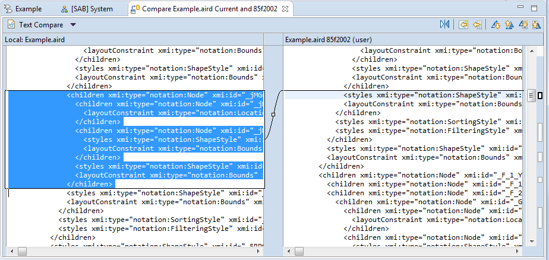

Git is one solution to support management of versions for any kind of files.
Git works with a central repository, and local repositories for each users.
Basic operations when working with git are summarized below:
eGit is an adapter for Eclipse to support git operations directly from the Eclipse environment.</br> eGit provides several additional windows:
To see the different repositories on which you are working and their content (branches, tags, files...)
To define which files will have to be committed and provide a commit description
To see the history of commits
Moreover, additional information is provided by the Capella Project Explorer:
And new commands are available on projects:
The Capella Git includes a version of eGit.
In addition, it provides a functionality customized for Capella:
Indeed, when using the command "Compare With" of eGit, the default configuration mode is a textual comparison of files.
The Capella GIT adapter allows eGit to support the Capella diff/merge when using this command on Capella files.
Textual comparison

Capella diff/merge